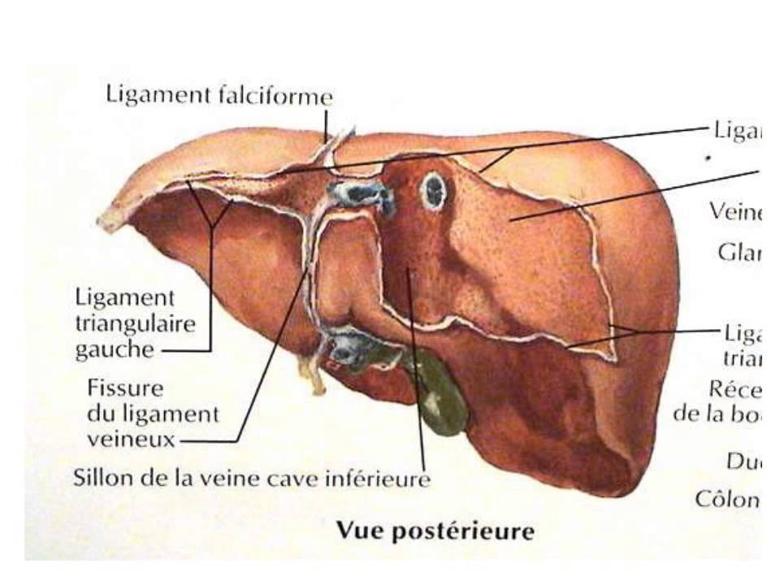

La cirrhose
Definitions
La cirrhose
La cirrhose est une fibrose diffuse annulaire qui entraene des nodules de regeneration. La structure du foie est detruite. Il peut s'y ajouter une necrose des cellules hepatiques.
La cirrhose regroupe donc trois types d'anomalies :
Les lesions hepatocytaires.
Les phenomenes de reparations anormaux : nodule de regeneration.
Les fibroses : bandes de collagenes qui viennent s'intercaler entre les cellules hepatocytes.
Deux stades evolutifs :
Cirrhoses compensees : pratiquement aucun sympteme.
Cirrhoses decompensees : complication.
Rele du foie
Le metabolisme des glucides : stockage du glucose sous forme de glycogene.
Le metabolisme des lipides : synthetisation des differents lipides puis stockage dans le foie ou secretions dans le sang ou excretions dans la bile.
Le metabolisme des protides : synthetisation et excretion des differentes proteines (albumine, facteurs de la coagulation).
Stockage du fer.
Detoxication : medicament, alcool.
Secretion d'enzyme.
Secretion de la bile.

Etiologies
L'alcoolisme
Les hepatites chroniques : Virus B / Virus C.
Medicaments.
Signes cliniques
Hypertension portale :
Œdeme des membres inferieurs.
Splenomegalie.
Varice œsophagienne.
Ascite.
- Insuffisance hepatocellulaire :
- Angiome stellaire.
- Erytheme palmaire.
- Trouble endocrinien.
- Ictere.
Signes biologiques
Diminution de l'albumine.
Diminution du taux de prothrombine (TP).
Augmentation des gamma-globulines.
Examen complementaire
Ponction-biopsie hepatique qui met en evidence les nodules de regeneration, une sclerose annulaire ou une necrose hepatocytaire.
Complications
Decompensation ictero-ascitique.
Rupture de varices oesophagiennes et donc hemorragie.
Encephalopathie hepatique.
Decompensation ictero-ascitique
Signes cliniques et biologiques
Ascite (presence de liquide dans le peritoine).
Oedemes des membres inferieurs.
Hepatomegalie.
Ictere ou subictere.
Angiomes stellaires (agglomeration de vaisseaux formant une tumefaction).
Amyotrophie.
Augmentation de la bilirubinemie (> 20) (pigment jaune-rouge resultant de la degradation de l'heme de l'hemoglobine, elle est responsable des icteres ou jaunisses).
Diminution de l'albuminemie (augmentation de la phosphocaline, des TGO et TGP).
Anemie.
Traitements
Regime sans sel strict car tendance aux retentions hydro-sodee.
Regime sans alcool.
Les ruptures de varices œsophagiennes
Signes cliniques et biologiques
Hematemese (vomissement de sang) ou melena (presence de sang dans les selles).
Hypotension arterielle.
Etat de choc.
Deglobulisation : diminution de l'hemoglobine et hematocrite.
Endoscopie qui confirme le diagnostic.
Traitements
Tamponnement par sonde :
Sonde de Black More (varice œsophagienne).
Sonde de Linton (varice caroto-tuberositaire).
Medicaments.
Sclerotherapie endoscopique : injection dans les varices d'un produit sclerosant.
L'encephalopathie hepatique.
Traitement par antibiotherapie.
Traitements de la cirrhose
Transplantation hepatique pour la cirrhose decompensee.
Sevrage alcoolique pour la cirrhose compensee.
Voir aussi :
L'appareil digestif
Module Gastro-enterologie